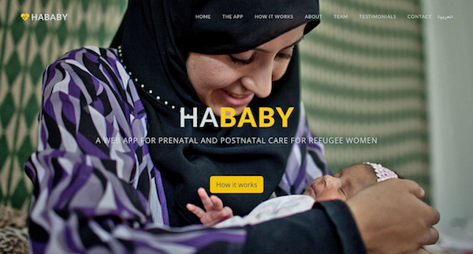

say hi: @krissygoround
Coding For You, Me and a Refugee
Kriselda Rabino
Software Engineer and Human in Tech
Soft-wat?

These Are Very Awesome
We'll find out why in a bit.
Dance
Body language, meet the programming kind.

"Zenn-tro"
Venntro's Friday office stretch sessions
ZoukFest

It's a Thing!
Women In Tech
Summary: we need more of these.
"Good at computer-izing":

My Development Team
(AKA Kris is a tiny human)
Kode With Klossy:
Ruby-coding Victoria's Secret Angel Karlie Kloss launches scholarship for girls
Skyping Mum
"I will never be a programmer"
My first impressions of a career in technology
Most of My Programming Lectures
Simple, Mind-Blowing Realization
Code is just a modern craft that lets you make things. I like making things!

Technology with Humans
Women Hack For Non-Profits, Acorn Aspirations and more reasons this is a good mix
Awkward Developer-Type Person By The Food
Are you talking... to me?
Hackathons?
That sounds intimidating...
Women Hack for Non-Profits
Increasing the open source footprint of women in technology
AcornHack:Girls
Hackathon for young female entrepreneurs aged 12-19
Tech Workshops
My ruby and coding concepts workshop for beginners
Technology FOR Humans
Using design, development and technical problem-solving to address crises
EmpowerHack
Building sustainable tech solutions for refugee women & girls
Inclusive Design and Thinking
A hackathon for all: "techies", "creatives", marketers, humanitarian/health/education workers, + those who just want to help make change.
Health Mate
Web app with geomapping tools for both NGOs and migrants to access and recommend clinical services around you.
HaBaby
First hackathon app success! A team create an accessible app to give prenatal and postnatal advice to displaced women. Ongoing and being field tested by organisation Doctors of the World.
Draw My Life
My current team and ongoing project to create a search engine of refugee drawings to expose mental health issues in children. For primary use by Terres Des Homme for lobbying, but can extend to fundraising, social media awareness, _insert method here_.
What Tech Can Look Like
The Last Bit
Things I'd Love Everyone To Do More; They're Free
Be Tech-Curious
- Go to one of London's many tech meetups (e.g. meetup.com)
- Try one of the many free online tutorials to learn a little code and demystify the things you use everyday (e.g. codecademy.com )
- Keep up with some articles or blog posts regarding the tech industry (e.g. techcrunch.com)
Get Involved
Want to get your hands dirty and give yourself some new challenges? Join WHFNP (mostly women only), EmpowerHack (all genders) or another organisation that supports making great things while you learn.
I am always happy to hear your thoughts and point you in the right direction.
Do Scary Things More (In General)
A common theme throughout this talk was my journey taking interesting twists and turns everytime I did something out of my comfort zone. Tech industry or not, I encourage you to do the same.
Put your hand up to give a lunch time talk. Start a blog. Give a workshop. Fight "imposter syndrome" and realise everyone has something to learn from each other (including yourself).